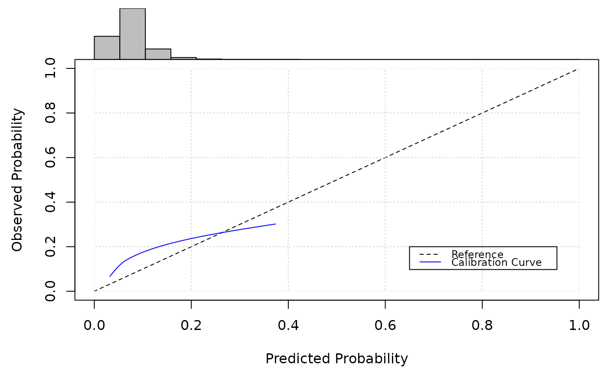
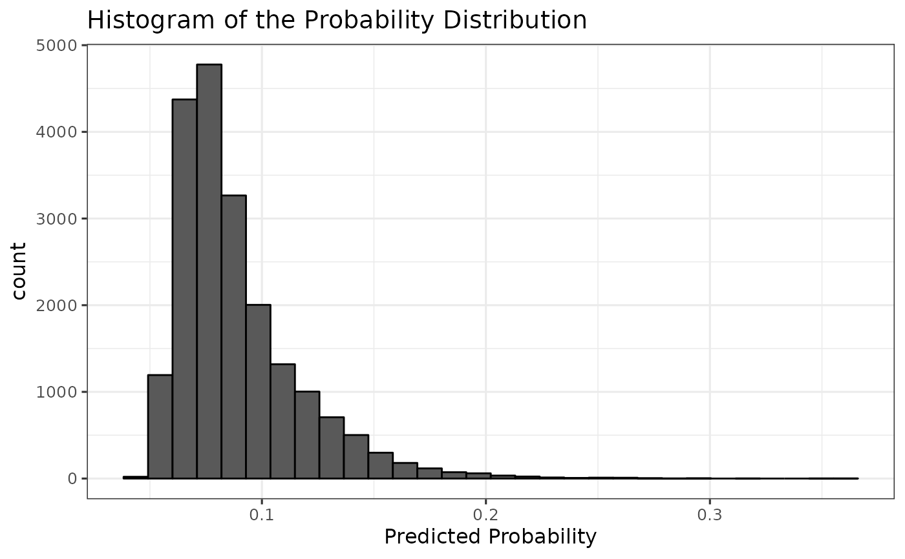
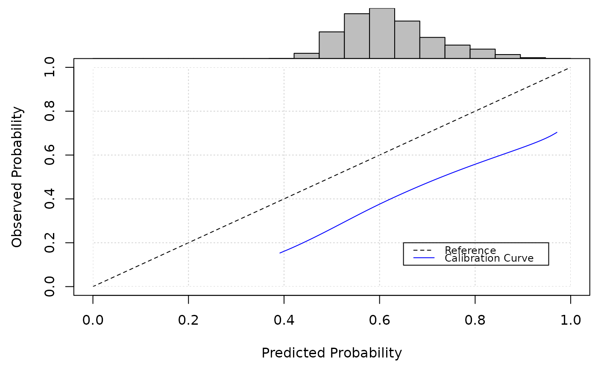

Validate an existing prediction model, to calculate the predictive performance against a new (validation) dataset.
Usage
pred_validate(
x,
newdata,
binary_outcome = NULL,
survival_time = NULL,
event_indicator = NULL,
time_horizon = NULL,
CalPlot = TRUE,
...
)Arguments
- x
an object of class "predinfo"
- newdata
data.frame upon which the prediction model should be validated
- binary_outcome
Character variable giving the name of the column in
newdatathat represents the observed outcomes. Only relevant formodel_type="logistic"; leave asNULLotherwise.- survival_time
Character variable giving the name of the column in
newdatathat represents the observed survival times. Only relevant formodel_type="survival"; leave asNULLotherwise.- event_indicator
Character variable giving the name of the column in
newdatathat represents the observed survival indicator (1 for event, 0 for censoring). Only relevant formodel_type="survival"; leave asNULLotherwise.- time_horizon
for survival models, an integer giving the time horizon (post baseline/time of prediction) at which a prediction is required. Currently, this must match a time in x$baselinehazard.
- CalPlot
indicate if a flexible calibration plot should be produced (TRUE) or not (FALSE)
- ...
further plotting arguments for the calibration plot. See Details below.
Value
A list of performance metrics, estimated by applying the existing prediction model to the newdata.
Details
This function takes an existing prediction model formatted according
to pred_input_info, and calculates measures of predictive
performance on new data (e.g., within an external validation study). The
information about the existing prediction model should first be inputted by
calling pred_input_info, before passing the resulting object
to pred_validate.
newdata should be a data.frame, where each row should be an
observation (e.g. patient) and each variable/column should be a predictor
variable. The predictor variables need to include (as a minimum) all of the
predictor variables that are included in the existing prediction model
(i.e., each of the variable names supplied to
pred_input_info, through the model_info parameter,
must match the name of a variables in newdata).
Any factor variables within newdata must be converted to dummy (0/1)
variables before calling this function. dummy_vars can help
with this.
binary_outcome, survival_time and event_indicator are
used to specify the outcome variable(s) within newdata (use
binary_outcome if x$model_type = "logistic", or use
survival_time and event_indicator if x$model_type =
"survival").
In the case of validating a logistic regression model, this function
assesses the predictive performance of the predicted risks against an
observed binary outcome. Various metrics of calibration (agreement between
the observed risk and the predicted risks, across the full risk range) and
discrimination (ability of the model to distinguish between those who
develop the outcome and those who do not) are calculated. For calibration,
a flexible calibration plot is produced. Calibration-in-the-large (CITL)
and calibration slopes are also estimated. CITL is estimated by fitting a
logistic regression model to the observed binary outcomes, with the linear
predictor of the model as an offset. For calibration slope, a logistic
regression model is fit to the observed binary outcome with the linear
predictor from the model as the only covariate. For discrimination, the
function estimates the area under the receiver operating characteristic
curve (AUC). Various other metrics are also calculated to assess overall
accuracy (Brier score, Cox-Snell R2). Specify parameter CalPlot to
indicate whether a calibration plot should be produced (TRUE), or not
(FALSE). Can also specify parameters xlab, ylab,
xlim,and ylim to change plotting characteristics for the
calibration plot.
In the case of validating a survival prediction model, this function
assesses the predictive performance of the predicted event probabilities
(at a fixed time horizon) against an observed time-to-event outcome.
Various metrics of calibration and discrimination are calculated. For
calibration, a flexible calibration plot, observed-to-expected ratio and
calibration slope are produced (all at the specified time_horizon).
For discrimination, Harrell's C-statistic is calculated. Specify parameter
CalPlot to indicate whether a calibration plot should be produced
(TRUE), or not (FALSE). Can also specify parameters xlab,
ylab, xlim,and ylim to change plotting characteristics
for the calibration plot.
Examples
#Example 1 - logistic regression existing model, with outcome specified; uses
# an example dataset within the package
model1 <- pred_input_info(model_type = "logistic",
model_info = SYNPM$Existing_logistic_models[1,])
pred_validate(x = model1,
newdata = SYNPM$ValidationData,
binary_outcome = "Y")

#> Calibration Measures
#> =================================
#> Estimate Std. Err Lower 95% Confidence Interval
#> Calibration-in-the-large 0.6303 0.0251 0.5811
#> Calibration Slope 0.4665 0.0694 0.3305
#> Upper 95% Confidence Interval
#> Calibration-in-the-large 0.6796
#> Calibration Slope 0.6026
#>
#> Also examine the calibration plot, if produced.
#>
#> Discrimination Measures
#> =================================
#> Estimate Std. Err Lower 95% Confidence Interval
#> AUC 0.5468 0.0068 0.5334
#> Upper 95% Confidence Interval
#> AUC 0.5602
#>
#>
#> Overall Performance Measures
#> =================================
#> Cox-Snell R-squared: -0.0278
#> Nagelkerke R-squared: -0.0621
#> Brier Score: 0.0814
#>
#> Also examine the histogram of predicted risks.
#Example 2 - multiple existing model, with outcome specified; uses
# an example dataset within the package
model2 <- pred_input_info(model_type = "logistic",
model_info = SYNPM$Existing_logistic_models)
pred_validate(x = model2,
newdata = SYNPM$ValidationData,
binary_outcome = "Y")

#> $Model_1
#> Calibration Measures
#> =================================
#> Estimate Std. Err Lower 95% Confidence Interval
#> Calibration-in-the-large 0.6303 0.0251 0.5811
#> Calibration Slope 0.4665 0.0694 0.3305
#> Upper 95% Confidence Interval
#> Calibration-in-the-large 0.6796
#> Calibration Slope 0.6026
#>
#> Also examine the calibration plot, if produced.
#>
#> Discrimination Measures
#> =================================
#> Estimate Std. Err Lower 95% Confidence Interval
#> AUC 0.5468 0.0068 0.5334
#> Upper 95% Confidence Interval
#> AUC 0.5602
#>
#>
#> Overall Performance Measures
#> =================================
#> Cox-Snell R-squared: -0.0278
#> Nagelkerke R-squared: -0.0621
#> Brier Score: 0.0814
#>
#> Also examine the histogram of predicted risks.
#>
#> $Model_2
#> Calibration Measures
#> =================================
#> Estimate Std. Err Lower 95% Confidence Interval
#> Calibration-in-the-large -0.3584 0.0251 -0.4076
#> Calibration Slope 0.6212 0.0767 0.4709
#> Upper 95% Confidence Interval
#> Calibration-in-the-large -0.3092
#> Calibration Slope 0.7715
#>
#> Also examine the calibration plot, if produced.
#>
#> Discrimination Measures
#> =================================
#> Estimate Std. Err Lower 95% Confidence Interval
#> AUC 0.5606 0.0071 0.5467
#> Upper 95% Confidence Interval
#> AUC 0.5744
#>
#>
#> Overall Performance Measures
#> =================================
#> Cox-Snell R-squared: -0.0093
#> Nagelkerke R-squared: -0.0208
#> Brier Score: 0.0813
#>
#> Also examine the histogram of predicted risks.
#>
#> $Model_3
#> Calibration Measures
#> =================================
#> Estimate Std. Err Lower 95% Confidence Interval
#> Calibration-in-the-large 0.8246 0.0250 0.7755
#> Calibration Slope 0.5084 0.1239 0.2655
#> Upper 95% Confidence Interval
#> Calibration-in-the-large 0.8736
#> Calibration Slope 0.7512
#>
#> Also examine the calibration plot, if produced.
#>
#> Discrimination Measures
#> =================================
#> Estimate Std. Err Lower 95% Confidence Interval
#> AUC 0.5182 0.0051 0.5082
#> Upper 95% Confidence Interval
#> AUC 0.5281
#>
#>
#> Overall Performance Measures
#> =================================
#> Cox-Snell R-squared: -0.0445
#> Nagelkerke R-squared: -0.0993
#> Brier Score: 0.0822
#>
#> Also examine the histogram of predicted risks.
#>
#Example 3 - survival model example; uses an example dataset within the
# package.
model3 <- pred_input_info(model_type = "survival",
model_info = SYNPM$Existing_TTE_models[2,],
baselinehazard = SYNPM$TTE_mod2_baseline)
pred_validate(x = model3,
newdata = SYNPM$ValidationData,
survival_time = "ETime",
event_indicator = "Status",
time_horizon = 5)

#> Calibration Measures
#> =================================
#> Estimate Std. Err Lower 95% Confidence Interval
#> Observed:Expected Ratio 1.1081 0.0092 1.0882
#> Calibration Slope 0.7462 0.0353 0.6769
#> Upper 95% Confidence Interval
#> Observed:Expected Ratio 1.1283
#> Calibration Slope 0.8155
#>
#> Also examine the calibration plot, if produced.
#>
#> Discrimination Measures
#> =================================
#> Estimate Std. Err Lower 95% Confidence Interval
#> Harrell C 0.5571 0.0027 0.5518
#> Upper 95% Confidence Interval
#> Harrell C 0.5624
#>
#> Also examine the histogram of predicted risks.